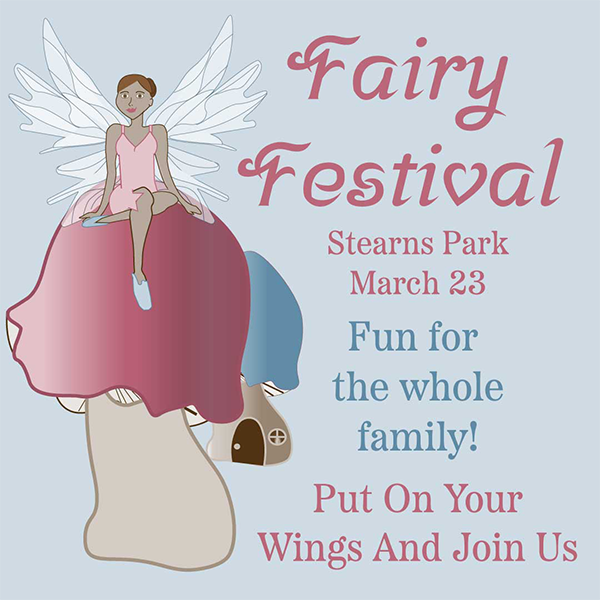
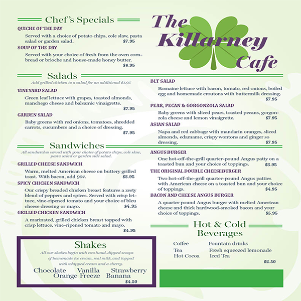
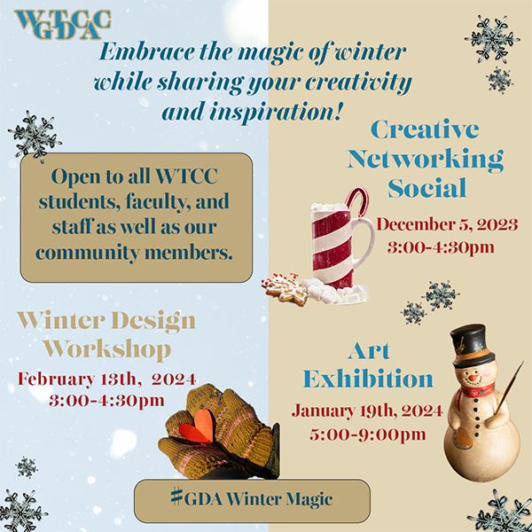

Angela Froese
Graphic Designer
I have always loved art and design. Over the years, I have embraced the challenge of conveying a narrative through visual mediums and with my current college endeavor,entered the realm of digital art in the area of advertising and graphic design.
Projects



The goal of each project is to tailor the design to the requests of the client
in a way that meets the needs of their audience.
Education
Wake Technical Community College - Raleigh, NC
Associates of Applied Science: Advertising and Graphic Design
Anticipated graduation date: December 2025
Current GPA 4.0
Related Courses and Experience
Completed Courses:
- English Writing and Enquiry
- Graphic Design: Computer Design Technology,
Computer Design Basics, Design Applications,
Drawing Fundamentals, Graphic Design 1 & 2 - Humanities:Critical Thinking, Sociology
- Math Measurements and Literacy
- Web Development: Web Development Tools, Web Design
Digital Program Experience:
- Adobe Creative Suite: Acrobat, Express, InDesign, Illustrator, Photoshop
- Google: Docs, Drive, Gmail, Meet, Sheets, Slideshow
- Microsoft: Excel, Outlook, Powerpoint, Teams, Word
- Social Media: Instagram, Facebook, LinkedIn